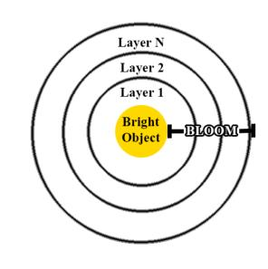
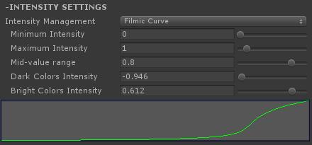
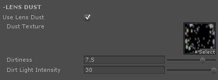
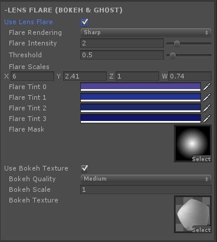

将Ultimate Bloom组件添加到相机：“Component/UltimateBloom/Add to selected camera”
应该把它放在Tonemapping之前：
提高对象的自发光强度，这可以通过使用材质中的自发光参数来控制。
另外，你还可以配置Bloom曲线或强度阈值来排除一些低自发光物体（必须开启HDR）。
第一层具有最小的Bloom半径，每个后续层Bloom半径逐渐提高。然后所有层合并，并加入到源图像。

Temporal Stability Filter 时间稳定性过滤器：启用此功能后，时间感知将在采样阶段完成。移动相机时，这将消除大多数Bloom抖动。
Sampling Mode 采样模式：你可以选择固定采样或高度相关采样。如果你选择固定采样，Bloom的模糊算法将以像素为单位，这会导致在更大分辨率时产生更小的Bloom尺寸，因为模糊算法不会随着分辨率的改变而自适应。
Intensity Function 强度方法：如果你选择Threshold，Bloom将根据模糊后的图像应用阈值。如果你选择Filmic Curve，Bloom将有更多的可调节参数来计算强度。
Filmic Curve设置：

需要指定一个镜头灰尘贴图，以及设置镜头灰尘吸收或透射光的强度。

Flare Mask 耀斑遮罩：可以遮挡掉由屏幕空间算法引起的难看的边沿。
Bokeh Texture 耀斑贴图设置：在“UltimateBloom/Graphics”文件夹下有几个预置的耀斑贴图。

Anti-Jitter Pass 抗抖动通道：如果启用，抗抖动通道将限制耀斑的抖动。